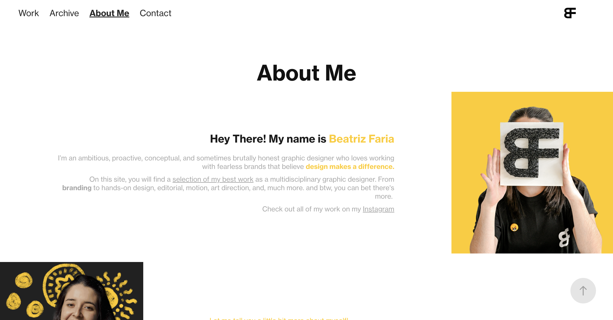
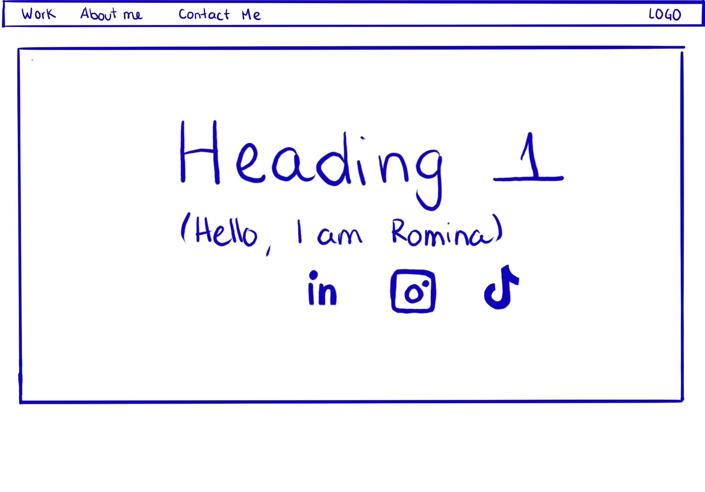
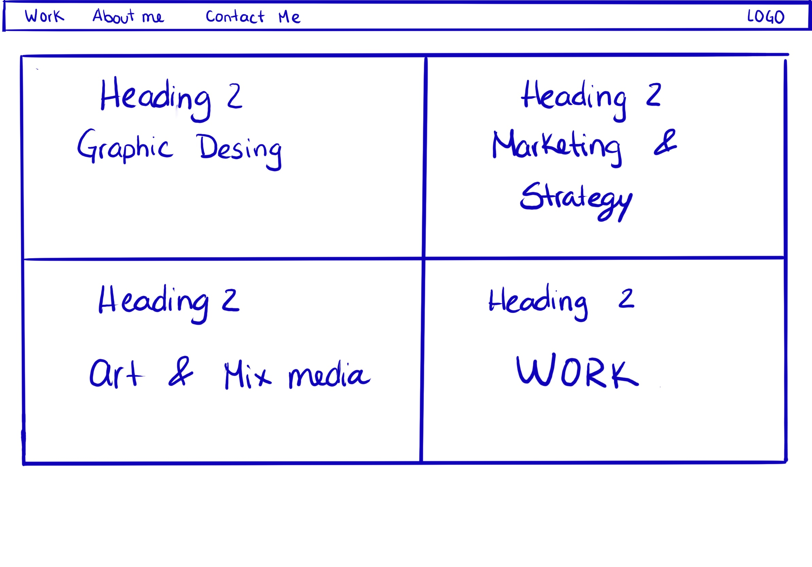

Contents
Intent Tone Brand Persona Wireframe Copy Deck CompetitionIntent
Beatriz Faria is an ambitious, proactive, conceptual, and creative graphic designer who loves working with fearless brands that believe design makes a difference. The website fully introduces a selection of her best work as a multidisciplinary graphic designer, from branding to hands-on design, editorial, motion, art direction, and much more.
Voice & Tone
The tone and voice of this creative graphic designer can be described as confident, energetic, and passionate. Here's a breakdown of the key characteristics: Ambitious and Proactive. The designer presents themselves as someone who is driven and takes initiative. They are enthusiastic about their work. Conceptual Thinker: They emphasize their ability to think conceptually, suggesting a creative and strategic approach to design. Fearless and Confident: The designer is drawn to working with brands that are unafraid to push boundaries and believe in the power of design to make a difference. Engaging and Enthusiastic: They engage the reader by mentioning that there's more to discover, creating a sense of anticipation. Informative: They provide a brief overview of their background, education, and professional focus, giving visitors an understanding of their qualifications and expertise. Educational Background: The mention of their educational background adds credibility to their skills and experience.
 x
x
Brand
The brand of this website would likely reflect the characteristics and personality traits of the creative graphic designer described in the provided content. Here are some attributes that could define this website's brand: Personal branding: skills, experience, and portfolio so the brand is closely tied to the individual. Professionalism: education, skills, and experience creating a reliable brand image. Lastly, it shows the designer's passion for creativity and conceptual thinking and values innovation and creative problem-solving.
Client Range
They specify that they work with diverse clients, from local businesses to global industry icons, showcasing versatility.
Small Business Owner Seeking Branding Services
Name: Sarah
Background: Sarah owns a small local business and wants to improve her brand's visual identity and marketing materials.
Goals: She wants to find a talented graphic designer to help her create a compelling logo, packaging, and marketing collateral to stand out in her local market.
Needs: Sarah needs a designer who can understand her brand's values and translate them into a cohesive visual identity.
Marketing Manager at a Mid-sized Company
Name: Alex
Background: Alex works for a mid-sized company responsible for marketing and brand management.
Goals: Alex is looking for a graphic designer with a strong portfolio who can assist in creating marketing collateral, maintaining brand consistency, and developing new branding initiatives.
Needs: Alex needs a designer who can handle various design tasks, including digital and print materials, and collaborate effectively with the marketing team.
Aspiring Graphic Designer or Design Student
Name: Chris
Background: Chris is a design student or an aspiring graphic designer looking for inspiration and guidance in the design industry.
Goals: Chris is interested in seeing examples of high-quality design work and gaining insights into the industry.
Needs: Chris needs inspiration and information about the designer's journey and education to learn from their experience.
Work Archive About Me Contact
Hello, I'm Beatriz Faria -- An ambitious, proactive, conceptual, and creative graphic designer who loves working with fearless brands that believe design makes a difference.
Archive -- under construction
About Me -- Hey There! My name is Beatriz Faria
I’m an ambitious, proactive, conceptual, and sometimes brutally honest graphic designer who loves working with fearless brands that believe design makes a difference.
On this site, you will find a selection of my best work as a multidisciplinary graphic designer. From branding to hands-on design, editorial, motion, art direction, and, much more. and btw, you can bet there's more.
Check out all of my work on my Instagram
Contact -- Let's work together
Send me a DM on Instagram or maybe an e-mail
Also, If you want to see even more about specific areas of my work (Branding projects, Packaging, etc.) Just send me an e-mail and I will send you some decks so you can take a closer and more personal look at my work!
Other Graphic Designers: These are your direct competitors, including freelancers, independent designers, and design agencies. They offer similar design services and compete for the same clients.
Design Agencies: Larger design agencies with multiple designers and resources might compete with you for clients, especially if you're a freelancer or a smaller design studio.
In-House Design Teams: Many companies have their in-house design teams. If you're targeting corporate clients, you may be competing against these teams for design projects.
3 Personas
Wireframe


Copy-deck
Header
Body Copy
Subheading 1
Subheading 2
Subheading 3
Competition